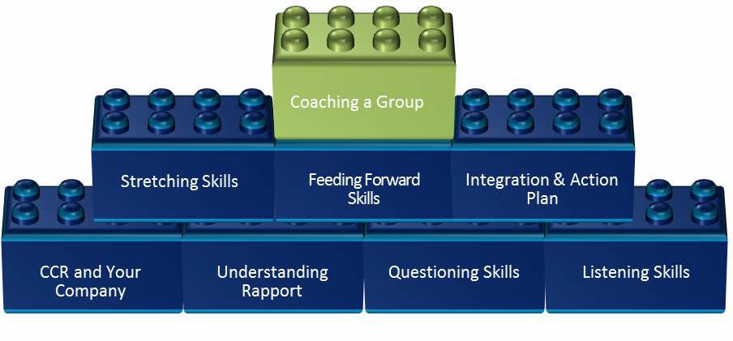
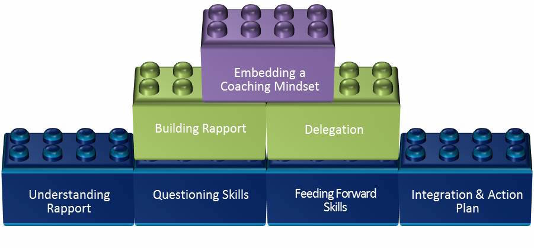
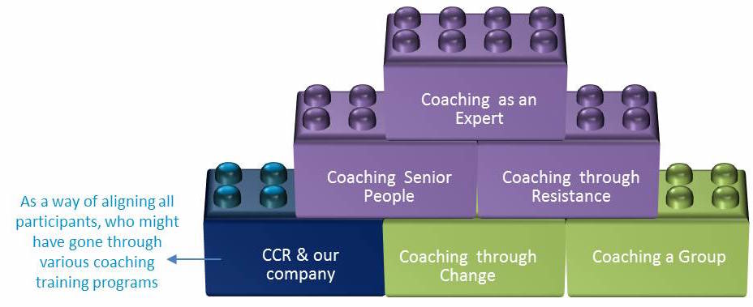

Bring Coaching Mindset into your organisation
Leave your details, and we'll get in touch
Coaching Conversations that get Results
A progressive TMI Learning Suite to help organisations build a Coaching Culture
I want to know more >Empowering everyone to perform at their best
and how you go about achieving this
Coaching is becoming recognised as one of the most powerful mechanisms available to organisations for achieving sustained results as well as strengthening and retaining organisational capability. Coaching increases the level of contribution and engagement to the organisation and at the same time helps individuals grow and develop. The benefits of building a coaching culture are enormous.
Retention, engagement and increased loyalty of people working with you to archieve results
Efficiencies, productivity and the resolution of conflicts enable you to archieve results
Better communication and more affable collegial relationships that support how you archieve results
Performance supports your business strategy and managing people becomes more focused as you archieve results
Shaping the learning to build a Coaching Culture
the approach we take whilst working with you
This TMI Learning Suite adds the crucial and often missing element to any People Performance Process in an organisation.
Building a coaching culture ensures regular conversations are happening across all levels of the organisation primarily focused on the individual and how that individual is performing.
People want a sense of connection to the organisations they work for. In return they expect to be valued and recognised. They want to learn new skills, develop their capability and make a success of their role.
Building a coaching culture will enable these needs to be met and in the process the organisation meets its performance and strategic goals.
CCR Awareness
Successful organisations recognise that speed, whether it be of change, of information, the way customers want solutions, technology and social media or the way they need to conduct their business, to remain competitive is making huge demands on their people and their performance.
Performance management is only one side of the coin. Organisations are now recognising that their internal coaching processes are a vital adjunct to their existing people management systems and processes.
New models and processes are needed to sustain success. Coaching answers this need. This workshop explains what this methodology is, how it works and how it can be used as a positive and permanent feature for sustaining business growth and success.
GROW Model & Coaching Interaction
- What Is CCR?
- Why CCR?
- How To Coach?
- When Do We Coach?
- What Is In It For Me?
Format and Duration
1/2 day interactive and practical workshop
Target Audience
Everyone involved as a coach or as a coachee
CCR Fundamentals
In today’s world of work people are required to think more and more about what they do; so we need to have conversations that stimulate and improve our thinking.
Resources are becoming more and more scarce. The only resource that is unlimited is people’s imagination and intellect. So we need to focus on these traits and adapt our people practices accordingly if we are to grow sustainably.
Coaching is about facilitating self-directed learning and development. This workshop builds and improves upon the fundamental skills that people need to become coaches and aid in the development of themselves and others. The coach does not necessarily have to have specific expertise in the area of influence of the person they are coaching; indeed this can often be an advantage.
Applying The GROW Model
- CCR & Your Company
- Understanding Rapport
- Questioning Skills
- Listening Skills
- Stretching Skills
- Feeding Forward Skills
- Integration & Action Planning
Format and Duration
2 days interactive and practical workshop
Target Audience
All managers of people
CCR Intermediate
Building on the core coaching skills of people in the business ensures a richness of dialogue that enables people to achieve results through their regular and positive coaching conversations.
This intermediate workshop not only progresses the use of the 4 coaching skills, it builds confidence in those who use coaching to develop the performance of others.
In any skill development process experience and time can help to intensify the ability and skills required to coach different people in a way that gets the best from them and their performance. Participants will have time to practice and implement the basic skills previously learned.
Applying Coaching Skills In Other Contexts
- CCR Fundamentals Review
- Building Rapport
- Performance Coaching
- Coaching for Potential
- The Coaching Mindset
- Delegation
- Coffee Machine Coaching
- Coaching Through Change
- Coaching A Group
- Career Coaching
Format and Duration
3 days interactive and practical workshop
Target Audience
All line managers and everyone who requires developing their coaching skills
CCR Advanced
Being able to excel in a skill you are passionate about brings with it tremendous rewards. When you see that skill and mindset having a direct impact on the successful achievements others attain through your coaching efforts, this has a direct correlation on your own sense of well-being.
When you are adding value with the advanced skill set of an expert coach, the contribution to the organisation is unparalleled. The ability to work at any level, with any person in the business to secure its success and sustainability, means your own contribution is vital to yourself, the team and the organisation.
This programme enables you to secure the skills and mindset of an expert coach such that you move to a state of unconscious competence, working intuitively to enhance the performance of others.
A Deep Dive Into Different Coaching Contexts
- CCR Intermediate Review
- Embedding A Coaching Mindset
- Coaching to Modify Behaviour
- Coaching Senior People
- Action Learning
- Coaching Through Resistance
- Coaching as an Expert
Format and Duration
2 days interactive and practical workshop
Target Audience
Internal consultants, invited employees and managers of people who use coaching intensely in their role
Example 1
Line Manager in a Factory
They are working shifts; you cannot take them out for 2 or 3 full days of training
They are very hands-on and dynamic people, who will find it difficult to sit for three days
Their CCR needs are mainly connected with providing feedback and coaching operators on how to deal with problems – individually and as a group.
Given all the above you can build a CCR solution that fits their needs. You can, over a period of two months create a Learning Journey where they have a 2-3 hour sessions, once a week and in-between the sessions they are given some tasks to apply their learning with their teams.
Example 2
The Sales Team
You have identified that they need to improve their coaching skills, so they can model CCR for the rest of the company.
This group is over trained and very busy
You have identified that they are quite good in providing feedback. What needs development is their capability to ask great coaching questions and to challenge in a coaching way
Given all the above you can build a CCR solution that fits their needs. As part of their monthly Sales Meetings, you can insert a 2 hour slot in the beginning of that day over the course of 6 months.
You can consider to use the following modules: Questioning, Integration, Challenging in a Coaching Conversation, Understanding Rapport, Delegation and Building Rapport and the exercise “My Star as a CCR Coach” from module Embadding as a Coaching Mindset as a basis to build those six 2-hour sessions.
Each session can start with introducing some model, concept, technique and then providing space to practice it, followed by extensive debriefing sessions.
Example 3
Internal consultants, HR Professionals
They have gone through CCR Fundamentals at different times, and different formats of the program
You see that they have very specific needs: coaching people through change, coaching groups and coaching senior leaders
Given all the above you can build a CCR solution that fits their needs and is a combination of CCR Intermediate and CCR Advanced. It could be a 3 day workshop that covers
You can also build an “add-on” Integration module of 2 hours each day, where you invite people from the business. The participants can apply their coaching skills on these individuals and then get valuable and real feedback from this group as well as from the facilitator.